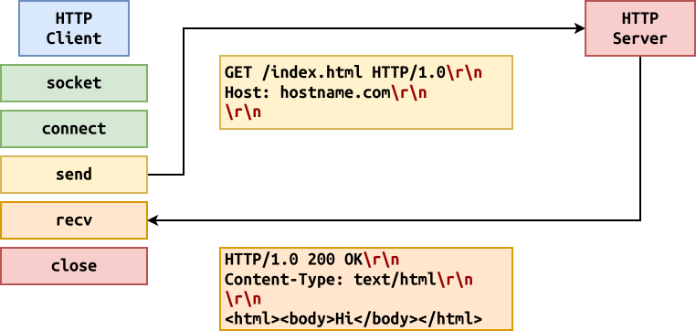

Review: HTTP¶
What happens during a HTTP transaction?
- Skit: out HTTP transaction (use chalkboard to draw out diagram).
HTTP: Client¶

HTTP: Server¶

Discuss:
-
How many clients can we handle at a time?
Only
1client at a time.How can we use task parallelism to improve this?
Split up accepting client from handling client.
How can we use data parallelism to improve this?
Create a new process to handle each client.
HTTP: Server (Single)¶
import datetime import socket import sys # Parse command line arguments try: host = '127.0.0.1' port = int(sys.argv[1]) except IndexError: print('Usage: http_server.py port', file=sys.stderr) sys.exit(1) # Create and advertise server socket with socket.socket(socket.AF_INET, socket.SOCK_STREAM) as server: # Bind to port and begin listening server.bind((host, port)) server.listen() print(f'Listening on {host}:{port}') while True: # Accept a client client, address = server.accept() with client: print(f'Accepted connection from {address[0]}:{address[1]}') # Read HTTP request with client.makefile('r', encoding='utf-8') as rfile: while line := rfile.readline().strip(): print(line) # Send HTTP response with client.makefile('w', encoding='utf-8') as wfile: wfile.write('HTTP/1.0 200 OK\r\n') wfile.write('Context-Type: text/plain\r\n') wfile.write('\r\n') wfile.write(str(datetime.datetime.now()))-
What impact does
hosthave? -
How to enable concurrency?
HTTP: [Forking Server] (OOP, Forking)¶
import datetime import logging import os import signal import socket import sys # Class class HTTPServer: def __init__(self, server_address: tuple[str, int]): self.host = server_address[0] self.port = server_address[1] self.socket = socket.socket(socket.AF_INET, socket.SOCK_STREAM) self.socket.setsockopt(socket.SOL_SOCKET, socket.SO_REUSEADDR, 1) self.socket.bind((self.host, self.port)) self.socket.listen() logging.info('Listening on %s:%d', self.host, self.port) def __del__(self): logging.info('Shutting down') self.socket.close() def handle_client(self, client, address): # Read HTTP request with client.makefile('r', encoding='utf-8') as rfile: while line := rfile.readline().strip(): logging.debug('Client %s:%d - %s', address[0], address[1], line) # Send HTTP response with client.makefile('w', encoding='utf-8') as wfile: wfile.write('HTTP/1.0 200 OK\r\n') wfile.write('Context-Type: text/plain\r\n') wfile.write('\r\n') wfile.write(str(datetime.datetime.now())) def serve_forever(self): # Ignore children (let init adopt them) signal.signal(signal.SIGCHLD, signal.SIG_IGN) while True: # Accept one client client, address = self.socket.accept() logging.info('Accepted client from %s:%d', address[0], address[1]) # Fork child process and let it handle client with client: if os.fork() == 0: # Child self.handle_client(client, address) # Main Execution def main(arguments: list[str]=sys.argv[1:]): # Parse command line options try: host = arguments[0] port = int(arguments[1]) except IndexError: print('Usage: http_server_forking.py host port', file=sys.stderr) sys.exit(1) # Configure logging format and level logging.basicConfig( datefmt = '%Y-%m-%d %H:%M:%S', format = '[%(levelname)1.1s %(asctime)s %(module)s:%(lineno)d] %(message)s', level = logging.INFO, # Demo: Switch to logging.DEBUG ) # Create and run server server = HTTPServer((host, port)) server.serve_forever() if __name__ == '__main__': main()Discuss:
-
Change
logginglevel fromlogging.INFOtologging.DEBUG. -
Is
exit(0)in child necessary? Yes, prevent fork bomb! -
Is
client.close()in parent necessary? Yes, prevent using up all file descriptors! -
Add
signal.signal(signal.SIGCHLD, signal.SIGIGN)to ignore children.